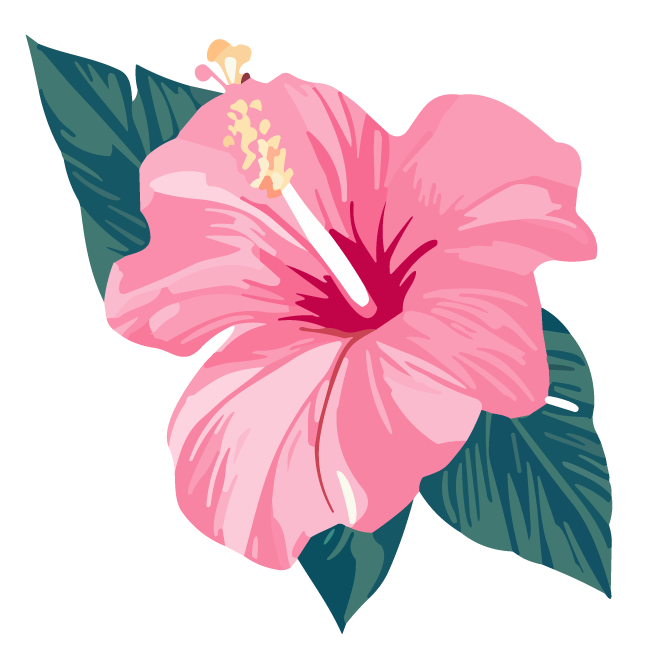

list-halfブロック
タイトル横の小さな花や葉などの画像は直接htmlに配置してあり、class="kazari"で場所やサイズを制御しています。
| 見出し | ここに説明など入れて下さい。サンプルテキスト。 |
|---|---|
| 見出し | ここに説明など入れて下さい。サンプルテキスト。 |
| 見出し | ここに説明など入れて下さい。サンプルテキスト。 |
| 見出し | ここに説明など入れて下さい。サンプルテキスト。 |
| 見出し | ここに説明など入れて下さい。サンプルテキスト。 |
まず、htmlソースが見れる状態にして、
<title>観光案内サイト・旅行会社向け 無料ホームページテンプレート tp_travel1</title>
を編集しましょう。
あなたのホームページ名が「Travel Logo」だとすれば、
<title>Travel Logo</title>
とすればＯＫです。SEO対策もするなら冒頭に重要なワードを入れておきましょう。
続いてhtmlの下の方にある、
Copyright© Travel Logo All Rights Reserved.
の部分もあなたのサイト名に変更します。
htmlソースが見える状態にしてmetaタグを変更しましょう。
ソースの上の方に、
content="ここにサイト説明を入れます"
という部分がありますので、テキストをサイトの説明文に入れ替えます。検索結果の文面に使われる場合もありますので、見た人が来訪したくなるような説明文を簡潔に書きましょう。
html側に、
alt="Travel Logo"
となっている箇所があるので、この部分もあなたのサイト名に変更しましょう。
全体のカラー変更は簡単にできます。
cssフォルダのstyle.cssを開き、冒頭の、
:root {
の中にある、
--primary-color:
〜〜〜
他数行の設定を変更すればサイト全体の色変更ができます。
※必要に応じてbodyのbackgroundやcolorの他、テーブルやカラムブロック内の調整が必要になる場合もあります。
Font Awesome 公式サイト
Font Awesome アイコン一覧（※バージョン6）
iタグを使ってhtmlに直接アイコンを読み込む場合と、cssの擬似要素を使って読み込む場合があります。
それぞれ他のアイコンに置き換えたい場合は、当サイトのマニュアルをお読み下さい。
cssフォルダのstyle.css冒頭で読み込んでいる「Font Awesomeの読み込み」のブロック。
テンプレートを編集していないのに突然動きがおかしくなった場合は、style.cssの冒頭でCDNから読み込んでいるFont Awesome関連のファイルのバージョンを変更して動作するか確認してみて下さい。
画面幅が900px以下で、メインメニューが開閉ブロックタイプになります。
この数値を変更したい場合は、jsフォルダのmain.jsの、
if(window.innerWidth <= 900)
の、900の数値を変更して下さい。
「観光地」や「アクティビティ」メニューにはドロップダウンメニューが設定されています。
ドロップダウンを使う為の特別な設定は不要ですが、必ず親となるli要素の「中」に入れるようにして下さい。
OKな例
<li><a href="">親となるメニュー</a>
<ul>
<li><a href="list.html">ドロップダウンのメニュー</a></li>
<li><a href="list.html">ドロップダウンのメニュー</a></li>
</ul>
</li>
NGな例
<li><a href="">親となるメニュー</a></li>
<ul>
<li><a href="list.html">ドロップダウンのメニュー</a></li>
<li><a href="list.html">ドロップダウンのメニュー</a></li>
</ul>
現在表示中のページのメニューには色がつきますが、その説明です。
通常は、
<li><a href="">メニュー名</a></li>
のようになっていますがこれを、
<li class="current"><a href="">メニュー名</a></li>
とする事で色がつきます。
自動で色がつくわけではないのでご注意下さい。
同一ページ内へのアンカーリンクの場合、destinations.htmlのメニューのように、
<a href="#link1">
など、通常のアンカーリンクのhtml指定をして下さい。
その他のページからは別ページへのアンカーリンクになる為、
<a href="destinations.html#link1">
などになっていますが、このタグをコピペでdestinations.htmlにそのまま使用すると、ブラウザはページをリロードしないため、メニューがスムース移動しません。スムースにならなくてもいいならこのコードを全htmlに共通で使ってももちろんOKです。
cssフォルダのslide.cssおよび、jsフォルダのmain.jsにスライドショーのスタイル設定があります。
slide.cssでは画像の指定や画像が切り替わるフェードのスピードなどの調整ができます。
main.jsでは、スライドショーの１枚あたりの表示時間の変更ができます。
サンプルテンプレートでは、16:9の画像がレスポンシブになるようcssで設定されています。
この比率以外でも問題なく表示されますが、表示されない部分が出てきますので、16:9以外の比率の画像を全部表示させたければ以下を調整して下さい。
#mainimg {
の中にある、
padding-top: 56%;
を調整します。56というのは、9÷16=0.5625の事です。
小数点まで入れても構いませんがあまり意味はないのでここでは省いています。
もし、2:1の画像を使いたければ、1÷2=0.5
padding-top: 50%;
と書き直せばOKです。
直接html側にテキストで入っていますので変更して頂いても構いません。背景色や文字色はslide.cssにあります。
このLoadingは3秒間表示される設定になっています。読み込む画像や動画によって変動するわけではないので必要に応じて変更してもOKです。
設定はjsフォルダのmain.js内の「スライドショー」ブロックの「3000」という部分です。
1.jpg〜3.jpgで作る場合はそのままimagesフォルダに画像を上書きすればOKです。拡張子を変えたい場合はslide.cssの中で読み込んでいる画像ファイル名を編集して下さい。
html側の「slide3」のブロックをコピペし、「slide4」に変更。
slide.cssの「.slide3」をコピペし、「.slide4」に変更したら、backgroundの画像ファイルも変更して下さい。
テキストの配置については下の解説を読んで下さい。
html側に直接テキストとして入っていますので入れ替えてご利用下さい。
テキストの配置については、slide.cssの、justify-contentやtext-alignで調整します。
センタリングしたい場合は（.slide1）以下。
justify-content: center;
text-align: center;
右寄せにしたい場合は（.slide3）以下。
justify-content: flex-end;
text-align: right;
どちらの指定もない場合（.slide2）は左寄せになります。
当サイトで用意したものなのでそのままご利用・編集頂いて問題ございません。
スライドショー以外のその他の写真もAI出力によるものです。こちらもそのままご利用頂いても構いません。
_movieタイプは、スライドショーではなくmp4動画のみを１つだけ配置しています。
動画の読み込みは直接index.htmlのheader内で行っていますので、ファイル名を変更するなどの必要があれば直接html内を書き換えて下さい。
アスペクト比の変更については、上のスライドショータイプの解説と同じです。
現状だと5秒に設定されているので、それ以外の動画を持ち込まれた場合は、jsフォルダのmain.jsの「スライドショー」の設定にある「5000」の数字を変更して下さい。
travel1_resort1_navy_movie1だけは10秒画像が入っているのでここの数字は「10000」になっています。
japan_movie3以外のテンプレートにこの３枚動画スライドショーを使いたい場合、index.htmlのスライドショーのhtmlコードをコピペしてくるだけでOKです。
※動画も必要です。
※動画の秒数は全て統一し、上で解説している秒数をmain.jsに設定して下さい。
サンプル動画は、写真を元にDream MACHINEで動画に変換したものです。
無料版では商用利用ができなかったので、有料プランに加入して再配布しています。
そのまま再利用して頂いても構いません。
slickを使ったスラドショーになっています。slick 公式サイト
テンプレート内の解説及び、当サイト上でのマニュアル以外のサポートは基本的には行なっておりませんので、使いこなしたい方はGoogle検索などかけてみて下さい。


枚数は自由に変更できます。html側に既存の写真ブロックをコピペして新しい画像ファイル名に書き換えて下さい。
スライドショーの設定は、jsフォルダのslick.jsで調整できます。
1. html下部にある、「jQueryファイルの読み込み」のタグ。※下のjsファイルより先に読み込んで下さい。
2. その下にある、「スライドショー（slick）」からの数行のタグ。
3. jsフォルダ内の「js/slick.js」。
アイコン内のテキストはhtml側で直接入力されていますので必要に応じて編集して下さい。
背景色は、cssフォルダのstyle.cssの、
.new dt span
や、
.new .icon-bg1
や、
.new .icon-bg2
のbackgroundでそれぞれ変更できます。
新しいアイコンを追加したい場合、上記の「.new .icon-bg2」ブロックをコピペし、.icon-bg2部分を.icon-bg3などに変更し、backgroundに好きな色を設定します。
後はhtml側で、
<span class="icon-bg3">〜〜〜</span>
などとすればOKです。
尚、あまり文字数が増えるとレイアウトが崩れるので注意して下さい。
style.cssの冒頭にあるbodyの設定内のbackgroundで指定しています。単色にしたい場合は、
background: #fff;
などにすればOK。（#fffは真っ白のカラーコードです。）
<div id="contents" class="bg1">
このbg1が背景画像用のcss指定です。使いたくない場合は、
<div id="contents">
にすれば出ません。
（※ここでは解説のために直接画像を配置しています。）
円形テキスト（※画像）がトップページの右側で回転するアニメーションです。
回転速度やサイズ、配置場所はcssフォルダのstyle.cssの
/*animation-text（トップページの大きな円形の文字が回るアニメーション）
をテキスト検索して下さい。
これは背景画像ではなく、直接html側にimg（bg_text1.svg）を配置しています。
上のイラストは
class="bg2"
で出ます。外せばイラストも消えます。
（※ここでは解説のために直接画像を配置しています。）
<section>を、
<section class="bg3">
とするとこのブロックのように背景色がつきます。
imagesフォルダに「bg3.svg」があるのでお好みの画像に入れ替えます。準備するのは上側の画像だけでOK。自動的に下側にも配置されます。
その後、cssフォルダのstyle.cssを開き、
/*bg3（トップページの「お知らせ」などで使っている背景）
でテキスト検索をかけて下さい。
設定方法などはコメントで記載されています。
見出しの両サイドのイラストを出したい場合は、h2の中に
<span class="kazari3-wrap">
を追加し、その中にテキストを加えると出ます。smallの小文字もkazari3-wrapに含める必要があるので注意して下さい。
画像を入れ替えたい場合は、images内のkazari3.svgを他の画像に変更します。向かって左側だけ準備すれば自動で右側に反転するようcssで設定されています。サイズもcssで変更できます。詳しい設定はstyle.css内の「.kazari3-wrap」をテキスト検索して下さい。
list-halfの中に、h3とtextとimageブロックをおいてレイアウトしています。
タイトル横の小さな花や葉などの画像は直接htmlに配置してあり、class="kazari"で場所やサイズを制御しています。
<div class="list-half reverse">
にすれば左右反転します。また、縦書きのh3要素を外すとこんな感じです。h4横の小さな画像も外しました。お好みで。
以下のような出現のアニメーションサンプルをsample_inview.htmlにまとめています。
好きなアニメーションに簡単に変更できますし、オリジナルのものを作る事もできます。
詳しくはindex_c2.htmlをご覧下さい。